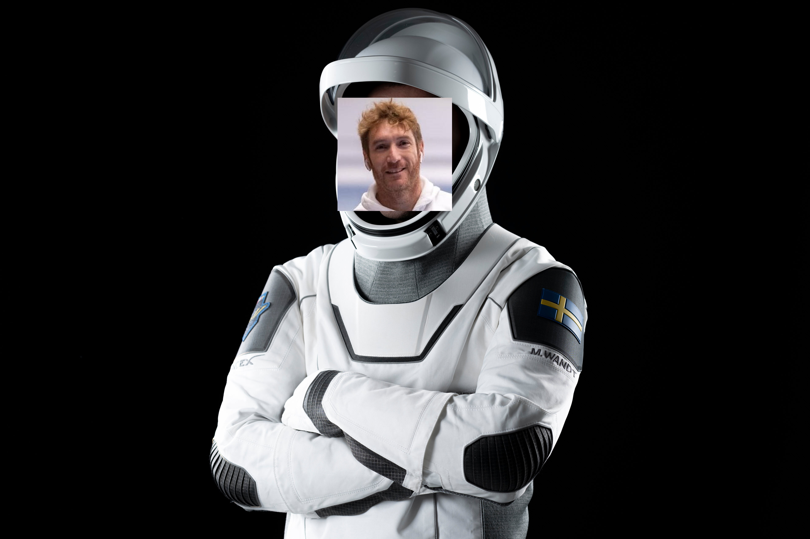
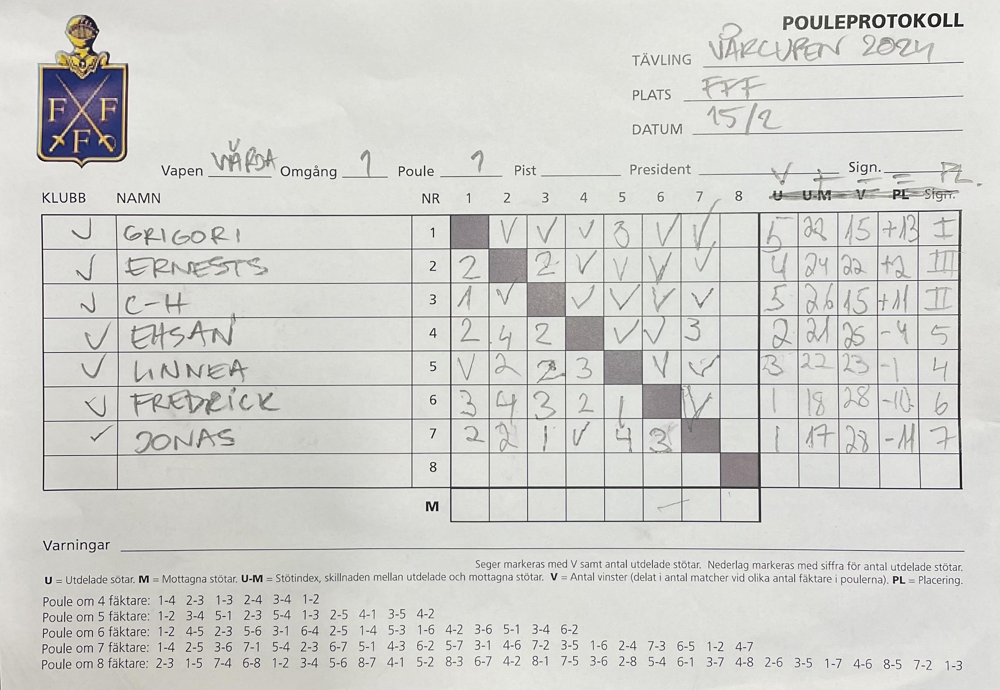
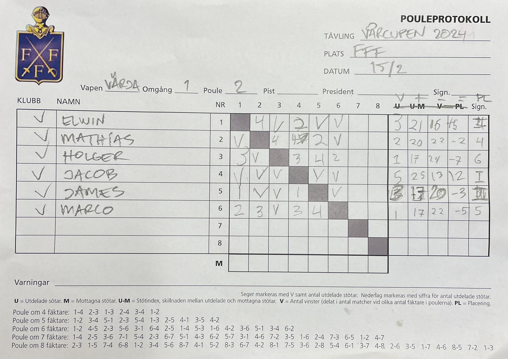
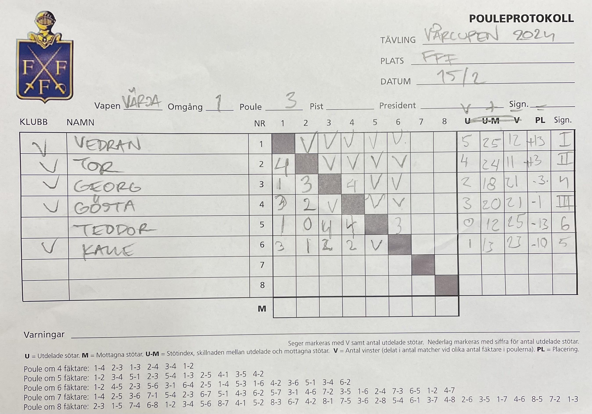
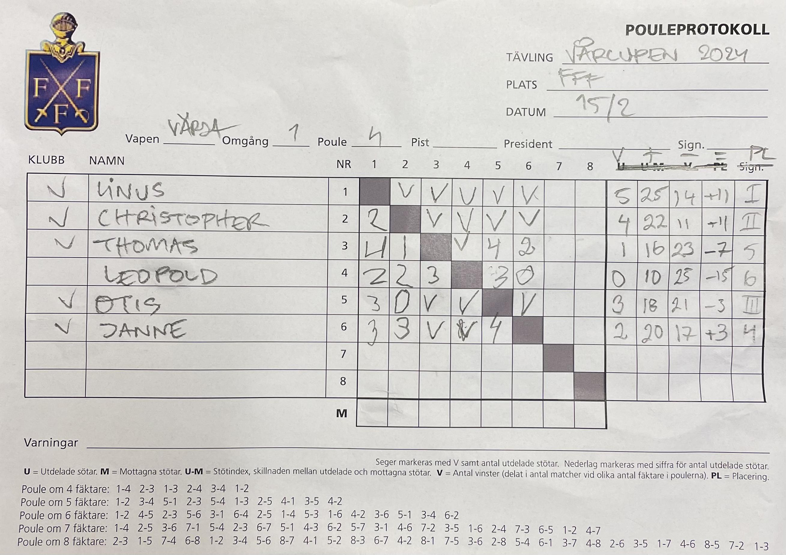
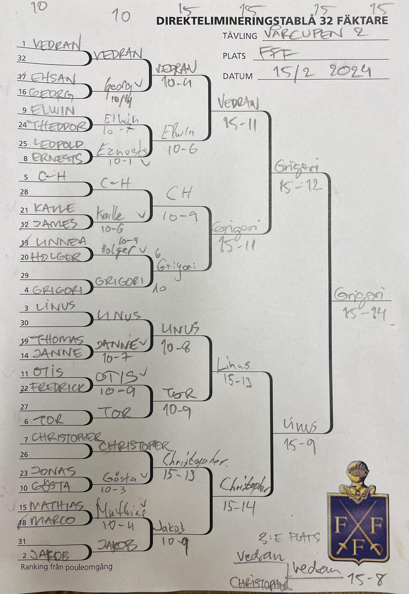

| Resultat efter den 2:a deltävlingen | ||
|---|---|---|
| Namn | Placering | Poäng |
| Grigori Beskin | 1 | 32 |
| Linus Islas Flygare | 2 | 26 |
| Vedran Markota | 3 | 21 |
| Christopher Kelly | 4 | 19 |
| Jakob Fagerstedt | 5 | 14 |
| C-H Wendt | 6 | 14 |
| Tor Forsse | 7 | 14 |
| Elwin Elg | 8 | 14 |
| Ernests Cimborevics | 9 | 8 |
| Gösta Stål | 10 | 8 |
| Otis Karlsson | 11 | 8 |
| Jan Tivenius | 12 | 8 |
| Mathias Elmfeldt | 13 | 8 |
| Georg Andersson | 14 | 8 |
| Holger Claesson | 15 | 8 |
| Kalle Frode | 16 | 8 |
| James Barden | 17 | 4 |
| Linnea Eriksson | 18 | 4 |
| Ehsan Ashrafi | 19 | 4 |
| Marco Romano | 20 | 4 |
| Thomas Schiöler | 21 | 4 |
| Fredrik Marelius | 22 | 4 |
| Jonas Billing | 23 | 4 |
| Teodor Dahlin | 24 | 4 |
| Leopold Germer | 25 | 4 |
Rapport från deltävling 2
Utmaningen var större än någonsin när expeditionen mot stratosfären i form av den andra deltävlingen i 2024 års Vårcup lyfte från jorden.

Knappt har Marcus Wandt och hans rymdexpedition hunnit landa förrän nästa resa till den yttre stjärnhimlen påbörjades. Med på resan denna gång var inte mindre än 25 äventyrslystna astronauter i fäktkläder.
Raketstarten
Äventyrarna delades denna gång upp i 4 stycken mindre rymdsonder som tillsammans slungade sig ut i halsbrytande fart för att ta sig igenom atmosfären.
I den första rymdskytteln blev det en febril kamp om vem som skulle fatta rodret. Till sist var det trots allt Grigori som knuffade sig framför CH och Ernests, men Ehsan, Linnea, Jonas och Fredrik kämpade tappert.

I nästa farkost var det debutanten Jakob Fagerstedt från DIF som var mest motiverad att ta kommandot och gjorde rent hus med motståndet, varför Elwin, James, Mathias, Holger och Marco, snällt fick falla in i ledet.

På avskjutningsrampen bredvid lyckade även Vedran betvinga motståndet tack vare en uddastötsseger mot Tor. Kvällens andra debutant Gösta Stål, också han från DIF, följde efter framför Georg, Calle och Teo.

Sist, men ingalunda minst, visade Linus bryskt att han inte tänkte släppa Chistopher framför sig. Otis presenterade sig också med eftertryck genom att komma före såväl Janne, Thomas och Leopold.

I omloppsbanan

När alla var församlade i omloppsbanan (32-tablån) övergick resan i nästa fas.
Överst i tablån imponerade Georg med att bemästra Ehsan, bara för att i nästa match få den otacksamma uppgiften att ta sig an den topprankade Vedran. Trots hårt motstånd slutade kvällen därmed för Georgs del.
Elwin fick fullt upp med Teodor och fick anstränga sig till det yttersta för att kunna fortsätta sin färd vidare i tävlingen. Därefter var det Ernests som stod för motståndet efter en seger mot Leopold. Denna gång var Elwin med bättre och kunde avancera till kvartsfinal.
CH som fäktat väl tidigare och därför fått en välbehövlig vila checkade med gott självförtroende in mot Kalle. Kalle gör man emellertid oklokt i att ta för givet, vilket James hade fått erfara. Med hjärtat i halsgropen kunde CH till sist, men endast en stöt tillgodo ta sig vidare.
Även Holger fick en besvärlig uppgift i form av Linnea och också här var det med tunnast möjliga marginal som han kunde ta sig an Grigori i match om kvartsfinal.
Janne, som efter sin bejublade debut i poddvärlden, inte riktigt kunnat komma upp i normal hög standard kunde till sist betvinga Thomas. Som belöning blev nästa steg en hård tvekamp mot Linus. Där gjorde Janne en tapper insats, men som inte räckte hela vägen, varför Linus tog steget vidare i tävlingen.
Otis som vi tidigare nämnde fortsatte att ta för sig vilket Fredrik, bittert fick erfara. Så när fick också Tor gå samma öde tillmötes, men i sista stund kunde den rutinerade Tor rädda sig vidare.
Gösta hande nu gjort sig väl hemmastad, genom seger mot James. Som belöning fick han hårdast tänkbara motstånd i skepnad av klubbkamraten Christopher. Det blev som väntat en hård envig som föll ut till Christophers fördel.
Jakobs segertåg höll så när på att ta slut i matchen mot Mathias, som tidigare besegrat Marco. Till slut kunde Jakob trots allt utropa sig till segrare.
Kvartsfinaler
Om det varit tufft tidigare, så går det knappt att föreställa sig utmaningen som kvartsfinalisterna ställdes för. Men det fanns inget annat val än att stirra ödet stint i ögonen.
Elwin och Vedran drabbade samman så att gnistor sprakade från klingorna. Elwin, som gjort ett namn för sig på den internationella kadettouren, satte Vedran på hårda prov, men matchen slutade till sist med ett avancemang till semifinalen för Vedran.
Grigori fick ta sig an CH, som ville ha revansch från poulen. Tragiskt nog, för CHs dag, får denna revansch låta vänta på sig och istället blev det Grigoris som fick ge sig i kast med Vedran.
En bit bort var det Linus och Tor som gav sig hän till en kamp mellan giganter. Linus tog åt sig en, till synes, betryggande ledning. Men Tor är inte den som ger upp. Sakta men säkert minskade Tor in på avståndet och hade så när lyckats ta sig upp jämsides, men ack! I slutet var det trots allt Linus som fick rikta in blicken mot en semifinal mot Christopher. Den sistnämnde hade nämligen med blotta förskräckelsen lyckats ta sig förbi sin klubbkamrat Jakob, men bott en stöt.
Semifinaler och final
I det här laget var såväl fäktare som publik utmattade av den intensiva anspänningen, men tävlingen travade på utan att ta någon hänsyn till detta. Det fanns sålunda inget annat val för simifinalisterna än att koppla in, fälla ned maskerna och kämpa.
Med ett brak, kolliderade Vedran och Grigori. Vedran visste att det skulle krävas något exceptionellt för att få Grigori på fall, men återigen visade Grigori att han inte accepterar annat än seger.
Linus fick en bra start i sin match mot Christopher, och tittade sedan aldrig tillbaka. Det skulle därför bli en final mellan kvällens stora kämpar – Linus och Grigori.
Många trodde att Grigoris framfart inte skulle gå att hejda, men Linus ville annat. Varje gång Grigori tog ledningen, kämpade Linus sig tillbaka. Vem skulle stå som slutsegrare? Några minuter senare fick den utmattade publiken svaret, 15-14 till Grigori!
I matchen om tredjeplatsen fick Christopher försöka hitta ett sätt att ta betinga Vedran, men icke. Vedran hade bestämt sig för att inte tillåta sig besegras mer denna kväll.

Tabeller
Äntligen kan vi nu slänga oss över tabellerna, och vi börjar med att sammanfatta deltvling 2:
Damklassen
Så här ser det ut i damklassen
| Ställningen i damtävlingen | ||||
|---|---|---|---|---|
| Efter den 2:a deltävlingen | ||||
| # | Namn | Deltävling nr. | Totalt | |
| 1 | 2 | |||
| 1 | Linnea Eriksson | 4 | 4 | 8 |
| 2 | Neolie Lippert | 4 | NA | 4 |
Totalsammanställningen
Med två raka segrar har därmed Grigori dragit på sig ledartröjan. Kommer det vara möjligt för någon att utmana honom?
| Ställningen i Vårcupen 2024 | ||||
|---|---|---|---|---|
| Efter den 2:a deltävlingen | ||||
| # | Namn | Deltävling nr. | Totalt | |
| 1 | 2 | |||
| 1 | Grigori Beskin | 32 | 32 | 64 |
| 2 | Vedran Markota | 19 | 21 | 40 |
| 2 | Elwin Elg | 26 | 14 | 40 |
| 2 | Linus Islas Flygare | 14 | 26 | 40 |
| 5 | Christopher Kelly | 14 | 19 | 33 |
| 6 | Tor Forsse | 8 | 14 | 22 |
| 6 | C-H Wendt | 8 | 14 | 22 |
| 8 | Jonathan Svensson | 21 | NA | 21 |
| 9 | Ernests Cimborevics | 8 | 8 | 16 |
| 9 | Mathias Elmfeldt | 8 | 8 | 16 |
| 9 | Holger Claesson | 8 | 8 | 16 |
| 9 | Georg Andersson | 8 | 8 | 16 |
| 13 | Lukas Marcos | 14 | NA | 14 |
| 13 | Francesco Pelletta | 14 | NA | 14 |
| 13 | Jakob Fagerstedt | NA | 14 | 14 |
| 16 | Otis Karlsson | 4 | 8 | 12 |
| 17 | Ehsan Ashrafi | 4 | 4 | 8 |
| 17 | Ian Bäckström | 8 | NA | 8 |
| 17 | Jan Tivenius | NA | 8 | 8 |
| 17 | Thomas Schiöler | 4 | 4 | 8 |
| 17 | Linnea Eriksson | 4 | 4 | 8 |
| 17 | Teodor Dahlin | 4 | 4 | 8 |
| 17 | Benedict Chambers | 8 | NA | 8 |
| 17 | Leopold Germer | 4 | 4 | 8 |
| 17 | James Barden | 4 | 4 | 8 |
| 17 | Gösta Stål | NA | 8 | 8 |
| 17 | Kalle Frode | NA | 8 | 8 |
| 28 | Peter Franzén | 4 | NA | 4 |
| 28 | Johan Ström | 4 | NA | 4 |
| 28 | Kurt Benkestock | 4 | NA | 4 |
| 28 | Per Sandgren | 4 | NA | 4 |
| 28 | Alexander Hallonsten | 4 | NA | 4 |
| 28 | Neolie Lippert | 4 | NA | 4 |
| 28 | Marco Romano | NA | 4 | 4 |
| 28 | Erik Stackerud | 4 | NA | 4 |
| 28 | Fredrik Marelius | NA | 4 | 4 |
| 28 | Jonas Billing | NA | 4 | 4 |
Endast framtiden kan ge oss det svaret.
Se nu till att anstränga er till det yttersta på träningen fram till nästa deltävling av Vårcupen som skjuter iväg redan den 26:e mars. Vi är där snabbare än ni kan ana!